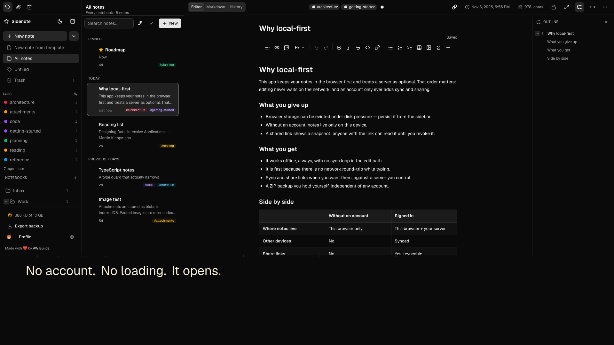

Nested notebooks
Unlimited depth, drag to re-parent, and cycle detection that refuses a move into a notebook's own subtree.
Local-first notes
A private notes and knowledge base that runs in your browser. No account, no analytics, no cookies — and optional sync to a server you control.
Free · AGPL-3.0 · Works offline · No account


Stored in your browser · IndexedDB
What it does
Everything you need to think in notes, without a server in the middle. The editor, search, links and history all run in the tab you already have open.
Unlimited depth, drag to re-parent, and cycle detection that refuses a move into a notebook's own subtree.
TipTap rich text with a raw Markdown view, tables, LaTeX, images, task lists, slash commands and templates.
MiniSearch runs in a Web Worker and the index is persisted, so search is fast, private and works offline.
Write [[Note Title]] to connect notes, with a backlinks panel and links that resolve when the note is created.
Snapshots on the first edit, on a rename and at most every five minutes — plus named checkpoints you keep for good.
Export a ZIP with every note and attachment, import it back, bring in an Evernote ENEX file, or print a note to PDF.
Warm Paper, Blue 2001, Glass 2009 and Gel 2000 — each with light and dark variants that change the whole interface.
Pick a pet for the sidebar. It can cross the screen once a session, present dialogs, or stay off — and it respects reduced motion.
Point Sidenote at your own Supabase instance for sign-in, multi-device sync and expiring share links. The hosted app stays local-only.
Privacy by architecture
Sidenote does not have an account system, an analytics pipeline or a copy of your notes. The default deployment is a static app: the data never leaves the browser.
No Sidenote account, no Sidenote server, no third-party AI.
Self-host
The app is one Next.js codebase. Without environment variables it is fully local. Add your own Supabase stack and it gains accounts, sync and share links — on infrastructure you control.
npm ci.npm run dev for a fully local app, or build for production.$ git clone https://github.com/awbuilds/sidenote.git
$ cd sidenote
$ npm ci
$ npm run dev
# http://localhost:3000 — no account, no upload
$ npm run build && npm start
# or: docker compose up --buildQuestions
In your browser's IndexedDB, on the device you are using. They are not uploaded anywhere on the hosted app. Export a ZIP from Settings → Backup whenever you want a copy you hold yourself.
No. The hosted app has no account system and no sync backend. An account exists only on a deployment you configure with your own Supabase instance.
Local notes are deleted with the site's storage. That is why the app asks the browser for eviction protection, shows your storage usage, and makes ZIP export prominent. Keep a backup.
Yes, if you self-host: set the two NEXT_PUBLIC_SUPABASE_* variables at build time and apply the migrations. The project does not run a shared sync service for you.
Yes. It is a PWA with an app-shell service worker, and all data is local. After the first load it launches without a network.
No cookies, no analytics, no advertising, no crash reporting and no third-party fonts or scripts. The only storage is the app's own notes and theme choice, plus the site's light/dark preference. See the cookie policy.
Yes — GNU AGPL-3.0, source on GitHub. The licence lets you run, study, modify and share it, including as a network service, provided you offer the source.
Start writing
Open the app, write something, and export a backup when you are ready. No sign-up, no card, no cookie banner.
Open Sidenote